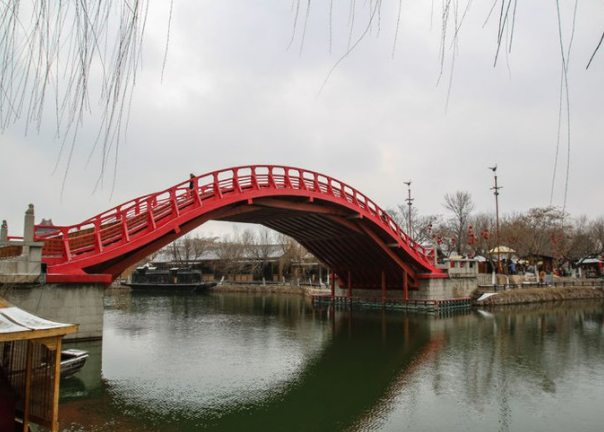
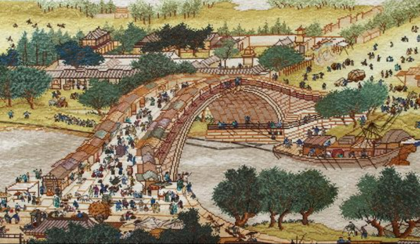
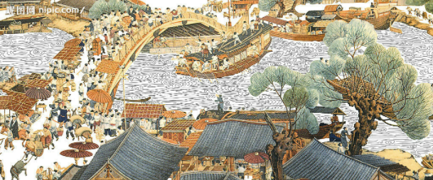

Second Part -- On the Bridge



The second part of the painting is when water meets the land, on the bridge there are horses and carriage passing by.
According to the records, the bridge was originally supported by stone, but the river was so fast that boats would crash into it and people would drown. Then someone came up with the idea of making a frame out of wood in the shape of a rainbow. In this way, not only the ships will not hit the top, but also the load-bearing capacity is better. Stone instead of wood was later used to make the bridge stronger, until the original stone was restored in recent years.
On this bridge, there are small merchants and hawkers who occupy the road, some people riding horse are showing off their title to those sitting in a carriage, some people are panicked when they see the shipwreck, and some people just excited to watch the chaos. Looking under the bridge, there is an accident. Some are throwing the rope or finding someone for help, some are trying their best to suckle up and turned the heads, some are trying to manage everyone, and some are crying.
It is the most popular place because it's the intersection of land and water. Here, different types of people, boats, donkeys, etc. come and go in chaos.